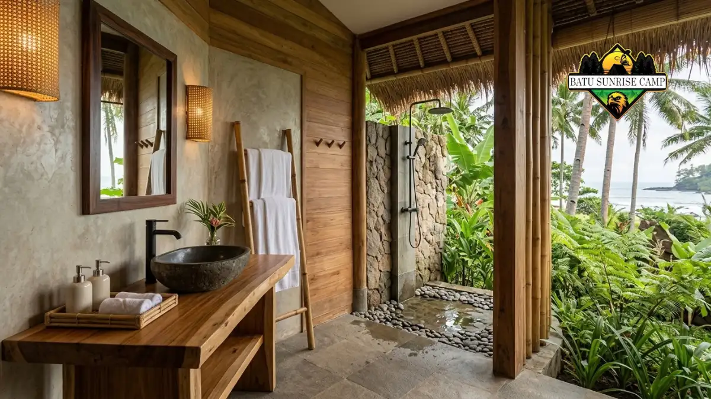

Fasilitas glamping pantai umumnya mencakup tenda atau kabin permanen, tempat tidur berkasur, listrik, kamar mandi, dan layanan makan, sehingga tamu cukup datang membawa barang pribadi.
- Akomodasi glamping pantai berupa tenda besar atau kabin yang sudah terpasang dan dirawat pengelola.
- Tempat tidur, listrik, dan kamar mandi menjadi fasilitas inti yang membedakan glamping dari camping biasa.
- Layanan makan, api unggun, dan aktivitas biasanya tersedia sebagai paket atau tambahan berbayar.
- Daftar fasilitas berbeda antar lokasi, sehingga rincian tertulis perlu diminta sebelum memesan.
- Tamu tetap perlu membawa perlengkapan pribadi, perlindungan matahari, dan obat-obatan.
Apa saja fasilitas akomodasi di glamping pantai?
Fasilitas akomodasi glamping pantai meliputi tenda berukuran besar atau kabin, kasur dengan seprai, bantal, selimut, lampu, dan pada banyak lokasi pendingin atau kipas.
Tenda glamping biasanya memakai rangka kokoh dan bahan tahan cuaca, berbeda dari tenda kemah ringan.
Di dalamnya terdapat tempat tidur setara kamar penginapan, sering kali dengan meja kecil, kursi, dan area duduk. Beberapa unit memiliki teras pribadi menghadap laut.
Tingkat kemewahan berbeda-beda. Ada unit sederhana dengan kasur dan kipas, ada pula unit lebih lengkap dengan pendingin ruangan, air hangat, dan dekorasi tematik.
Karena itu, tamu perlu memeriksa deskripsi unit, ukuran, kapasitas, dan foto terbaru, bukan hanya nama tipe kamar.
Bagaimana fasilitas kamar mandi dan kebersihan di glamping pantai?
Fasilitas kamar mandi pada akomodasi glamping tepi pantai tersedia dalam dua bentuk utama, yaitu kamar mandi eksklusif yang terletak di dalam unit atau kamar mandi komunal yang dirawat secara rutin oleh staf pengelola, dengan pemilihan bergantung pada kategori unit dan posisi geografis lokasi.
Unit glamping dengan harga premium biasanya dilengkapi dengan kamar mandi internal yang mencakup area shower, toilet jenis duduk, dan meja cuci tangan.
Unit yang lebih sederhana dapat memakai fasilitas bersama yang dirawat petugas. Perbedaan ini memengaruhi privasi dan kenyamanan, terutama bagi keluarga dengan anak kecil.
Pada lokasi pesisir, ketersediaan air tawar terkadang terbatas. Pengelola yang baik akan menyampaikan informasi ini dan menyediakan alternatif.
Kebersihan seprai, penanganan sampah, dan pengendalian serangga juga menjadi indikator kualitas yang layak ditanyakan sebelum memesan.

Unit glamping kelas premium sering kali menawarkan fasilitas kamar mandi pribadi lengkap di dalam tenda.
Layanan apa saja yang biasanya termasuk di glamping pantai?
Layanan yang umum meliputi sarapan, makan malam, api unggun terkelola, pemandu aktivitas, dan petugas jaga, namun cakupannya berbeda antar pengelola dan paket.
Banyak pengelola menjual paket menginap dengan sarapan, sedangkan makan malam sering menjadi pilihan tambahan atau paket barbeku.
Api unggun disediakan di area aman dengan pengawasan petugas. Aktivitas seperti bermain kano, berjalan menyusuri pantai, atau mengamati bintang kadang tersedia sebagai paket.
Staf penjaga malam dan layanan resepsionis memberikan dukungan kepada para tamu selama jam malam, yang merupakan keunggulan signifikan dibandingkan dengan berkemah konvensional di area terbuka.
Namun, tamu tetap perlu menanyakan jam layanan, kontak darurat, dan prosedur saat cuaca buruk sebelum tiba di lokasi.
Mengapa fasilitas glamping makin menjadi pertimbangan wisatawan keluarga?
Wisatawan keluarga mengutamakan kenyamanan dan keamanan, sehingga fasilitas seperti kasur, kamar mandi, dan layanan makan menjadi alasan utama memilih glamping dibanding berkemah sendiri.
Menurut Laporan Global Market Insights, segmen perjalanan keluarga memberikan kontribusi sebesar kurang lebih 50,5 persen terhadap pasar glamping global pada tahun 2025.
Data ini mencerminkan bahwa kebutuhan keluarga, seperti tempat tidur yang layak dan sanitasi yang bersih, memengaruhi pengembangan produk glamping. Pengelola pun cenderung menambah fasilitas ramah anak dan layanan makan yang praktis.
Angka global tersebut belum tentu sama dengan pola di pantai Indonesia, tetapi arahnya relevan: wisatawan yang membawa anak biasanya memilih akomodasi yang mengurangi risiko dan kerepotan.
Karena itu, daftar fasilitas yang jelas menjadi bagian penting dari promosi dan keputusan pemesanan.
Apa saja yang tetap perlu dibawa sendiri ke glamping pantai?
Tamu glamping pantai tetap perlu membawa pakaian, alat mandi pribadi, tabir surya, obat pribadi, pengisi daya, dan perlengkapan anak, karena tidak semua tercakup dalam fasilitas pengelola.
Meski kasur dan bantal sudah tersedia, kebutuhan pribadi tetap dibawa sendiri. Pakaian ganti, sandal pantai, topi, dan tabir surya sangat penting di area pesisir. Obat pribadi, termasuk obat rutin, harus dibawa dalam jumlah cukup.
Pengisi daya dan colokan tambahan membantu bila stopkontak di unit terbatas. Untuk keluarga, perlengkapan anak seperti pelampung ukuran tepat, camilan, dan mainan ringan perlu disiapkan.
Menanyakan barang yang disediakan, seperti handuk, alat mandi, dan pemanas air, akan menghindari barang ganda atau barang yang tertinggal.
Bagaimana memeriksa kualitas fasilitas sebelum memesan?
Periksa kualitas fasilitas dengan membaca ulasan terbaru, meminta foto asli unit, menanyakan rincian paket secara tertulis, dan memastikan informasi keselamatan serta kontak darurat tersedia.
Mulailah dengan ulasan terbaru, bukan ulasan lama, karena kondisi fasilitas bisa berubah. Perhatikan komentar tentang kebersihan, air, listrik, dan keamanan. Minta foto atau video unit yang sebenarnya, bukan hanya gambar promosi.
Tanyakan hal praktis: apakah ada generator saat listrik padam, bagaimana kebijakan saat hujan deras atau gelombang tinggi, dan siapa yang dapat dihubungi pada malam hari.
Pengelola yang transparan biasanya menjawab dengan jelas. Bandingkan hasilnya dengan perbedaan camping biasa dan glamping pantai agar ekspektasi sesuai, dan hitung dampaknya pada anggaran lewat panduan biaya glamping pantai vs camping biasa.
Apa keterbatasan fasilitas glamping pantai yang perlu diketahui?
Glamping pantai tetap memiliki keterbatasan, seperti kapasitas unit terbatas, sinyal yang tidak stabil, ketersediaan air tawar, dan paparan cuaca pesisir yang memengaruhi kenyamanan.
Jumlah unit di satu lokasi biasanya terbatas, sehingga musim liburan cepat penuh. Sinyal seluler dan internet di kawasan pantai terpencil dapat lemah. Kelembapan dan angin laut bisa membuat suasana lebih lembap atau berisik dibanding hotel di kota.
Suara ombak dan aktivitas tamu lain juga memengaruhi ketenangan. Tamu yang sangat sensitif terhadap suara atau kondisi lembap perlu mempertimbangkannya.
Pemahaman akan keterbatasan ini membantu tamu menyesuaikan harapan dan memilih unit yang paling tepat.
Kesimpulan
Fasilitas inti glamping pantai adalah akomodasi siap pakai, tempat tidur nyaman, listrik, sanitasi, dan layanan makan.
Daftar komprehensif bervariasi menurut lokasi geografis; oleh karena itu, dimohon untuk meminta penjelasan tertulis secara rinci, membaca ulasan terkini, dan menyiapkan perlengkapan pribadi sebelum melakukan perjalanan.